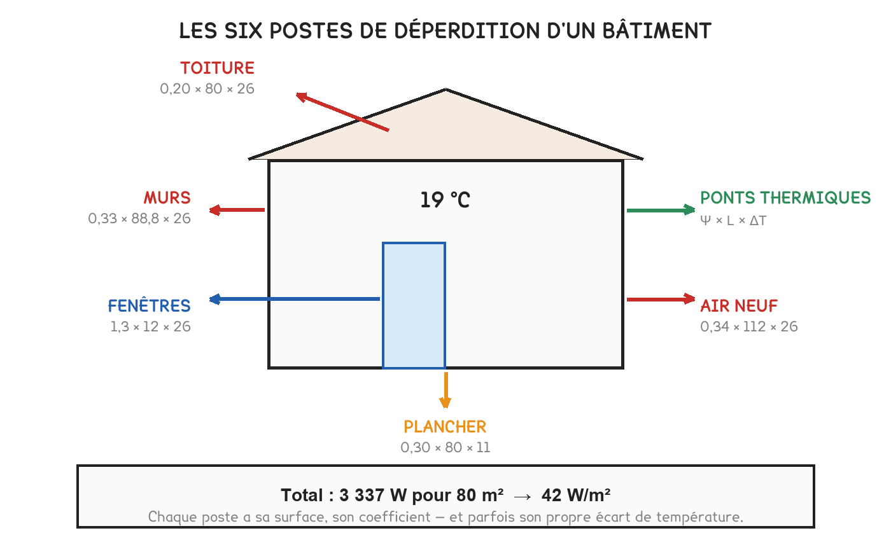
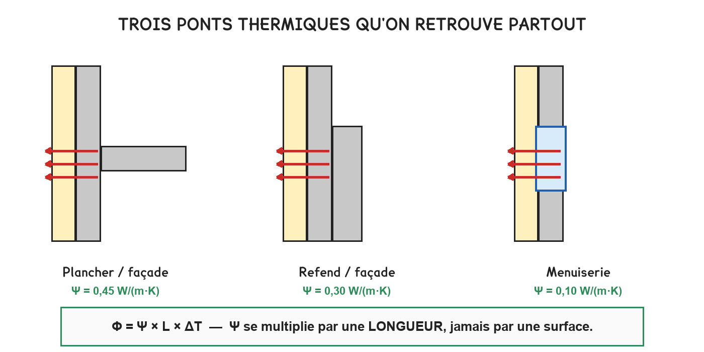
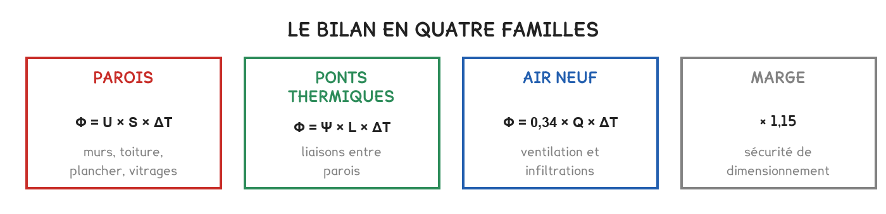

BTS FED option C · 2e année
La séance 3 savait calculer un mur. Un bâtiment n'est pas un mur : il a des jonctions, un plancher qui ne voit pas le froid, et un air qu'on renouvelle. Quatre familles, et rien d'autre.
1 outil · 8 questions · 3 exercices · 6 replis · 4 figures
Savoirs travaillés
Un U et une surface donnent la déperdition d’une paroi. Un bâtiment en a plusieurs, et il perd aussi ailleurs : par ses jonctions, et par l’air qu’on renouvelle.
Cette séance assemble le bilan complet, et fixe la puissance que le générateur devra fournir au jour le plus froid.

Φ parois = U × S × ΔT · Φ ponts = Ψ × L × ΔT
Φ air neuf = 0,34 × Q × ΔT · puis × 1,15
Le coefficient 1,15 n’est pas une sécurité de confort : il couvre la relance après un abaissement de nuit.
Un Ψ se multiplie par une longueur. C’est l’unité qui le dit : des watts par mètre et par kelvin. Le multiplier par une surface donne un résultat faux d’un facteur qui passe inaperçu, parce qu’il reste plausible.
C’est la règle qui fait perdre le plus de points, et elle ne se voit pas sur le tableau de calcul.
Un plancher sur vide sanitaire, un mur mitoyen, une paroi vers un local non chauffé ne voient pas la température extérieure. Leur écart est plus petit, souvent de moitié.

Appliquer le même ΔT à toutes les lignes du tableau surestime les déperditions d’un bâtiment sur vide sanitaire ou mitoyen, parfois de 15 %. Le générateur retenu est alors trop gros, et il court-cyclera toute la mi-saison.
Intérieur à 20 °C, extérieur de base à −7 °C, vide sanitaire à 5 °C.
| Poste | Détail | ΔT | Φ |
|---|---|---|---|
| Murs | 96 m² × 0,24 | 27 K | 622 W |
| Toiture | 74 m² × 0,16 | 27 K | 320 W |
| Menuiseries | 18 m² × 1,40 | 27 K | 680 W |
| Plancher sur vide sanitaire | 74 m² × 0,31 | 15 K | 344 W |
| Ponts thermiques | 40 m × 0,70 + 25 m × 0,50 | 27 K | 1 094 W |
| Air neuf | 0,34 × 110 m³/h | 27 K | 1 010 W |
| Total | 4 070 W | ||
| Avec la marge | × 1,15 | 4 680 W |
Les ponts thermiques sont le premier poste, devant les menuiseries et devant l’air neuf. Sur un bâtiment isolé par l’intérieur, ils pèsent plus que tous les murs réunis, c’est ce que la séance 3 annonçait, et que le bilan confirme.

Diviser la déperdition totale par l’écart de température donne un nombre qui ne dépend plus du temps qu’il fait : le GV, en watts par kelvin.
GV = Φ / ΔT
À observer en entreprise
Choisir un local du bâtiment de l’entreprise, un bureau, un atelier, une salle. Relever ses dimensions et la nature de chacune de ses parois : donnent-elles sur l’extérieur, sur un local chauffé, sur un local non chauffé ?
Repérer et photographier un pont thermique visible : une jonction, un balcon, un linteau, un appui de fenêtre. Demander si le bâtiment dispose d’une étude thermique et, si oui, relever la puissance de chauffage retenue.
Exercice · A2-3
Un plancher de 74 m² a un coefficient U = 0,31 W/(m²·K). Le local est à 20 °C, le vide sanitaire à 5 °C. Quelle est sa déperdition ?
Exercice · A2-3
Une maison porte 40 m de jonction plancher-mur à Ψ = 0,70 W/(m·K) et 25 m de refends à Ψ = 0,50. Il fait 20 °C dedans et −7 °C dehors. Quelle déperdition par les ponts ?
Exercice · A2-3
Sur cette maison, les murs perdent 622 W et les ponts thermiques 1 094 W. Le maître d’ouvrage propose de renforcer l’isolation des murs. Que lui répondez-vous ?
Pour aller plus loin
Un local non chauffé, vide sanitaire, garage, comble perdu, cage d’escalier, n’est ni à la température intérieure ni à la température extérieure. Il flotte entre les deux, à un niveau qui dépend de ce qui l’entoure.
Deux façons de traiter le problème, et elles donnent le même résultat :
1. On connaît la température du local non chauffé. On l’utilise directement dans l’écart. C’est ce que fait le bilan de la séance :
Φ = 0,31 × 74 × (20 − 5) = 344 W
2. On applique un coefficient de réduction. On calcule comme si la paroi donnait sur l’extérieur, puis on multiplie par un facteur inférieur à 1 :
b = (θi − θ local non chauffé) / (θi − θ extérieur)
Ici : b = (20 − 5) / (20 − (−7)) = 15 / 27 = 0,556 et 0,556 × 0,31 × 74 × 27 = 344 W, le même nombre.
Les ordres de grandeur de b, à reconnaître :
| Local | b typique | Pourquoi |
|---|---|---|
| Local très ouvert sur l’extérieur : parking, passage | 0,9 | il est presque dehors |
| Vide sanitaire, comble perdu | 0,5 à 0,7 | il bénéficie un peu du bâtiment |
| Cage d’escalier chauffée par ses parois | 0,3 à 0,4 | elle est presque dedans |
| Local mitoyen chauffé à la même température | 0 | aucune déperdition |
Le b n’est pas un abattement de confort, c’est de la physique. Il traduit que le local intermédiaire s’est réchauffé au contact du bâtiment. Un dossier d’épreuve donne soit la température du local, soit le b directement, jamais les deux, et on utilise ce qui est fourni.
Le cas du mitoyen chauffé mérite une phrase. Deux logements voisins à 20 °C n’échangent rien à travers leur mur commun : b = 0, et la ligne disparaît du bilan. Mais le mur reste dans le calcul réglementaire du bâtiment, et il compte pour la surface d’enveloppe. Deux logiques différentes, deux résultats différents, et un candidat qui les mélange se trompe.
Le total du bilan n’est pas la puissance à commander. Trois choses s’ajoutent ou ne s’ajoutent pas, et confondre les trois conduit à surdimensionner, avec les conséquences vues en séance 11.
Ce qui s’ajoute :
Ce qui ne s’ajoute pas :
Puissance et énergie appellent des hypothèses opposées. La puissance se calcule dans le cas le plus défavorable et ignore les apports. L’énergie se calcule en moyenne sur la saison et les compte. Utiliser les hypothèses de l’une pour l’autre est l’erreur structurante de la séquence.
Le contrôle final, en une division. La puissance obtenue, divisée par la surface chauffée, doit tomber dans les fourchettes de la séance 1 : 10 à 20 W/m² en passif, 30 à 50 en neuf réglementaire, 100 à 150 en ancien non isolé. Nos 4 680 W sur une maison de 90 m² font 52 W/m², cohérent avec un bâtiment isolé mais pas performant, ce que le poids des ponts thermiques confirme.
La ligne « air neuf » du bilan pèse 1 010 W, soit un quart du total. Elle mélange en réalité deux phénomènes très différents, et le dossier ne le dit pas toujours.
Le renouvellement volontaire. C’est la ventilation : un débit choisi, imposé par la réglementation et par les occupants. Il se calcule, il se règle, et il se récupère, c’est tout l’objet de la séance 14.
Les infiltrations subies. L’air qui entre par les défauts d’étanchéité : pieds de cloison, boîtiers électriques, jonctions de menuiseries, trappes. Il n’est ni choisi ni réglé, et il ne passe par aucun récupérateur.
Les deux se calculent avec la même formule (0,34 × Q × ΔT) mais seul le premier peut être récupéré. Sur un bâtiment perméable, une VMC double flux récupère sur la moitié du flux et laisse passer l’autre. C’est ce qui ruine les économies annoncées, et c’est le sujet développé en séance 14.
Comment le dossier les présente, et ce qu’il faut savoir lire :
| Ce que le dossier donne | Ce que ça désigne |
|---|---|
| Un débit en m³/h par personne | le renouvellement hygiénique |
| Un taux en volumes par heure | souvent le total, ventilation et infiltrations |
| Un indicateur de perméabilité | les infiltrations seules, sous un écart de pression conventionnel |
Le piège du taux de renouvellement. Un « 0,6 volume par heure » sur une maison de 250 m³ donne 150 m³/h. Mais s’agit-il du débit hygiénique seul, ou de l’ensemble ? Le compter deux fois, une fois en ventilation, une fois en infiltrations, surestime le poste de moitié. On lit ce que le dossier dit, et on ne cumule pas deux valeurs qui décrivent la même chose.
Le bilan de cette séance suppose des températures figées et un flux constant. C’est manifestement faux, la température extérieure varie d’heure en heure, et pourtant c’est le bon modèle. Il faut savoir pourquoi.
L’argument est celui du cas de dimensionnement. On ne cherche pas à décrire le comportement du bâtiment toute l’année : on cherche la puissance maximale qu’il faudra fournir. Cette pointe survient au petit matin, après plusieurs jours froids, quand le bâtiment a eu le temps de se mettre à l’équilibre avec l’extérieur, c’est-à-dire précisément en régime permanent.
L’inertie ne change rien à ce moment-là. Elle décale et lisse les variations, mais elle ne crée pas d’énergie : après une longue période froide, un bâtiment lourd et un bâtiment léger de même GV perdent la même puissance. La masse a seulement mis plus de temps à y arriver.
Là où le régime permanent ne suffit plus, et où il faut une simulation dynamique :
Le savoir A2-2 « simulation thermique dynamique » est au niveau 2 pour l’option C : savoir ce qu’elle est, et pourquoi elle est nécessaire là où le calcul statique s’arrête. La conduire n’est pas exigible ; savoir dire quand elle s’impose l’est.
Un bilan sert à dimensionner, mais il sert aussi à décider. Et pour décider, le classement des postes est plus utile que le total.
Le classement de notre maison :
| Poste | Φ | Part |
|---|---|---|
| Ponts thermiques | 1 094 W | 27 % |
| Air neuf | 1 010 W | 25 % |
| Menuiseries | 680 W | 17 % |
| Murs | 622 W | 15 % |
| Plancher | 344 W | 8 % |
| Toiture | 320 W | 8 % |
Le piège du poste le plus gros. Le réflexe est d’attaquer le premier de la liste. C’est souvent le bon, mais pas toujours, trois critères s’ajoutent au poids :
« On isole d’abord ce qui n’est pas isolé. » Une paroi nue traitée rapporte énormément ; un isolant existant doublé rapporte très peu. C’est la conclusion que la séance 5 chiffrera, et c’est la règle qui gouverne l’ordre d’un programme de rénovation.
Un dernier poste n’apparaît jamais dans ce classement et pèse pourtant : l’usage. Une consigne à 22 °C au lieu de 20 augmente le besoin de l’ordre de 15 %, sans travaux et sans que personne ne s’en aperçoive. C’est le poste le moins cher à traiter, et le plus difficile.
Les quatre familles de cette séance se retrouvent intégralement dans le bilan d’une chambre froide : parois, ponts, renouvellement d’air, plancher. Le principe ne change pas (U × S × Δθ) seul l’écart de température change de sens, puisque c’est l’intérieur qui est froid.
Mais un local frigorifique en ajoute trois que le bâtiment n’a pas :
| Apport | D’où il vient |
|---|---|
| La marchandise | ce qu’on rentre à 20 °C et qu’il faut descendre à 3 °C |
| Le personnel et l’éclairage | des apports internes qu’on ne peut pas négliger ici |
| Les ouvertures de porte | de l’air chaud et humide, plusieurs fois par heure |
Sur une chambre froide de commerce, les parois font souvent moins de la moitié du bilan. Un calcul qui ne compterait que l’enveloppe, exactement la méthode de cette séance, appliquée seule, sous-dimensionnerait la machine du double.
Ce que cela change au métier. Une machine sous-dimensionnée tourne en permanence, n’atteint pas sa consigne, et donne de longues plages à basse pression qui abîment le compresseur. Une machine surdimensionnée fait des cycles courts et déshumidifie mal, ce qui dessèche la marchandise.
Le froid commercial sort du programme de l’option C. Il est en revanche au cœur de l’attestation d’aptitude, et il n’est pas plus difficile : ce sont les mêmes quatre familles, avec trois lignes de plus.
Cette page rappelle la séance. Elle ne remplace pas le polycopié et ne donne aucun corrigé. Tous les calculs se font dans votre navigateur ; rien n'est enregistré.